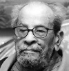

1994 yılında iki radikal islamcı Kahire’deki bir kafeye giden seksen iki yaşındaki bir adama saldırdılar. Polis daha sonra suikast girişimi ile El Cihat örgütü arasında bağlantı kurdu. Suikastin hedefi Mısırlı romancı Necip Mahfuz (1911–2006) boynundan bıçaklanarak ağır yaralanmış ama sağ kurtulmuştu.

Mahfuz, Arap dünyasının önde gelen yazar ve aydınlarındandı. 1988 yılında Nobel edebiyat ödülü kazanmıştı. Açık sözlü bir liberal, sekülarist ve ifade özgürlüğü taraftarıydı. Bunlar ona yapılan saldırıyı tetikleyen unsurlar olmuştu.
Mahfuz Kahire’de doğmuş ve katı Müslüman bir ailede eğitim görmüştü. Kahire Üniversitesi’nde felsefe okudu. Yavaş yavaş dinden kopmaya başladı. 1939 yılında ilk romanı Mockery of the Fates (Tecelliler Komedisi) yayınlandı. Olay Antik Mısır’da geçiyordu. Mahfuz bu tarihi dönemden epeyce ilham almıştı.
II. Dünya Savaşı’nın ardından Mısır’ın çalışan sınıflarını konu alan eserler vermeye başladı. Ünlü Kahire üçlemesi Palace Walk (Saray Turu / 1956), Palace of Desire (Arzu Sarayı / 1957) ve Sugar Street (Şeker Sokağı / 1957) Mısırlı bir ailenin hayatını konu alıyordu. Öyküler monarşinin yıkıldığı 1952 devrimiyle son buluyordu. 1959 tarihli kitabı Children of Gebelawi (Gebelawi’nin Çocukları) dini otoritelerin hışmına uğradı. Kitapta kullandığı laik söylem 1994 yılında gerçekleşen suikastin motivasyon kaynaklarından biri olacaktı.
Mahfuz, İslami radikalizmi eleştiriyordu. İsrail ve Filistin arasındaki 1978 barış antlaşmasını destekleyen birkaç Arap entelektüelinden biriydi. Bu nedenle Arap dünyasının çoğu yerinde kitapları yasaklandı. Nobel ödülünü kazanmasının ardından Salman Rüşdi’ye (1941-) olan desteğiyle 1989 yılında daha büyük bir çalkantıya neden oldu. Rüşdi, Şeytan Ayetleri isimli kitabında İslam dünyasını eleştiriyor ve söylendiğine göre İslam’a hakaret ediyordu. İran lideri, Rüşdi için idam fetvası vermişti.
Mahfuz’a yapılan saldırı ömrünün kalan kısmını sağlık sorunları ile boğuşarak geçirmesine neden oldu. Kalem kullanmakta bile zorlanıyordu. Doksan dört yaşında Kahire’de öldü.
Ek Bilgiler
1- Mahfuz çeşitli devlet memurluklarında çalıştı. Zira kitaplarından kazandığı para geçinmesine yetmiyordu. 1960’lar ve 1970’lerde filmleri sansürlemekle görevli ofiste görev aldı. Onu eleştirenler böyle bir işte çalışmasını yadırgatıcı bulmuştu.
2- Erken dönem yazılarını beğenmiyordu. 1930’larda yaklaşık elli kısa öyküsünü imha etti. Yine de kısa öykülerinden oluşan on üç derleme ve otuz senaryo yayınlamayı başarmıştır. Ayrıca otuz üç romanı bulunmaktadır.
3- Mahfuz hayatı boyunca Mısır’dan sadece üç kez ayrıldı. Nobel’i almak için Stockholm’e bile gitmedi. Onun yerine ödülü kızları aldı.